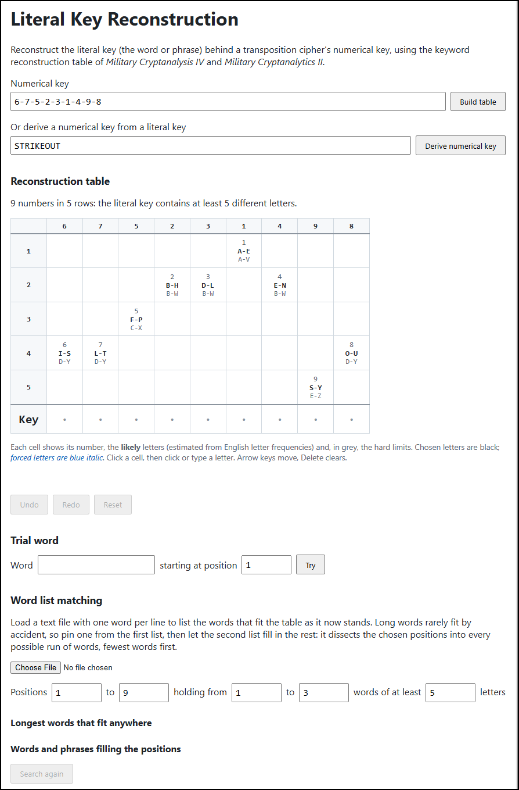

← back to Literal Key Reconstruction
A literal key is a key made of letters: a word, a phrase or a sentence. A numerical key is a sequence of numbers. One produced from a literal key is called a derived numerical key.
The usual method numbers the letters of the literal key in alphabetical order: the letter earliest in the alphabet gets 1, the next gets 2, and so on. A letter that occurs more than once is numbered from left to right.
For example, in the key word LOGISTICS, C comes first in the alphabet, so it gets 1; G gets 2; the two I’s get 3 and 4, from left to right; and so on:
| L | O | G | I | S | T | I | C | S |
|---|---|---|---|---|---|---|---|---|
| 5 | 6 | 2 | 3 | 7 | 9 | 4 | 1 | 8 |
(After Callimahos, Military Cryptanalytics, part I, par. 38.)
Moving in the opposite direction, i.e., reconstructing the literal key given the derived numerical key, is a more difficult challenge.
This tool helps a cryptanalyst reconstruct an original literal key from its numerical key.
NOTE: A given numerical key can map to more than one possible and valid literal key. For example, the numerical key “1-9-2-6-7-3-4-8-5”, can be derived by numerous literal keys, including “AVAILABLE”, “BUCKTEETH”, and even “DUET TESTS”. A cryptanalyst should use common sense and collateral information to decide on the most probable literal key.
As this note implies, literal keys can consist of one or more words.
The following is a partially loaded initial screen:

The screenshot shows the numerical key “6-7-5-2-3-1-4-9-8” derived from the literal key “STRIKEOUT”. The tool has created a “literal key reconstruction table” to aid in manually reconstructing the literal key.
The tool has other useful sections, including the “Trial word” and “Word list matching” aids.
The following section describes each of these aids.
As mentioned in the previous section, the Literal Key Reconstruction tool offers different aids to simplify the task of reconstructing the original literal key. Let’s examine each part of the tool.
The whole point of the tool is to convert a numerical key to a literal one. Therefore, you must provide a numerical key in this text box.
Type the numbers in key order and press Build table.
Separate the numbers with dashes, spaces or commas:
6-9-1-4-11-7-10-2-3-8-5,
6 9 1 4 11 7 10 2 3 8 5 and
6,9,1,4,11,7,10,2,3,8,5 are all read the same way.
A key of length n must use each number from 1 to n exactly once. If it doesn’t, the tool says which numbers are missing and builds nothing.
Build table always starts over: it builds a new reconstruction table, clears any letters you have placed, and starts a new word-list search.
Example: You solved a transposition cipher that uses the numerical key “9-1-11-6-5-10-2-12-7-4-3-8”. You should type this into the Numerical Key text field.
This aid works in the opposite direction: type a literal key, a word or a phrase, and press Derive numerical key. The tool numbers its letters as described above, puts the result in the Numerical key box, and builds the reconstruction table, just as Build table would.
Only letters count. Upper and lower case are treated the same, and
spaces, punctuation and digits are ignored, so Duet tests
and DUETTESTS derive the same key.
This is useful for practice: derive the key of a word you know, then try to reconstruct the word from the table. It also shows what the table looks like for a known answer.
This aid is based on the keyword reconstruction table described by Friedman (Military Cryptanalysis IV) and Callimahos (Military Cryptanalytics II).
NOTE: Before using this aid, be sure to use the “word list matching” aid found below. If the matching fails to find the literal key, you can always come back to the reconstruction table aid for manual analysis.
How the table is built. The numerical key runs across the top. Each number sits in a row of its own choosing: while the next higher number lies to the right, it stays in the same row; when it lies to the left, it drops to a new row. Letters never decrease from one number to the next, and a new row means the letter must increase. So the number of rows is the fewest different letters the literal key can have. The line above the table states this, for example 9 numbers in 5 rows: the literal key contains at least 5 different letters.
Reading a cell. Each cell shows:
J-L,
estimated from English letter frequencies;The bottom row, Key, spells out the literal key as far as it is known.
Placing letters. Click a cell, then click a letter in the picker below the table or type it. Letters outside the cell’s limits are greyed out, and the letters in the likely range are highlighted. Clear letter removes the cell’s letter. Every letter you place narrows the limits of the other cells; when a cell is left with only one possible letter, the tool fills it in for you, in blue italic.
Adjusting a likely range. The estimate is only a guide. If you think a cell’s letter lies elsewhere, move its likely range one letter at a time:
For example, three right-clicks on the start of J-L give
K-L, then L, and a right-click on the single
L widens it to L-M. A move that would take the
range outside the hard limits, or put its start after its end, is
ignored. An adjusted range is shown in brown and applies to that cell
only. To go back to the estimate, select the cell and press
Reset range in the picker.
Keyboard. The left and right arrow keys move along the key, Delete or Backspace clears a cell, and Escape deselects it.
Undo, Redo and Reset step back, step forward, or start the table afresh. Undo and Redo cover adjusted ranges as well as letters; Reset clears every placed letter and every adjusted range.
When every cell is filled, the tool reports whether the resulting literal key derives the numerical key exactly.
When you suspect a word belongs somewhere in the literal key, try it here. Type the word, enter the key position where it starts (1 is the leftmost number of the key), and press Try.
If the word fits, its letters are placed in the table in one step, and the limits of every other cell narrow just as if you had placed them by hand. Letters already in those cells are replaced. Undo takes the whole word back.
If the word cannot fit, nothing changes and the tool says where the alphabetical order breaks, for example: ACT does not fit: the alphabetical order breaks at position 5. A word that runs past the end of the key is rejected too.
A good strategy is to try a likely word, see how much of the key it settles, and undo it if the rest of the table leads nowhere.
This aid searches a word list for words that fit the table. Load a plain-text file with one word per line (case doesn’t matter; lines with anything other than letters are skipped).
To specify a word list, you will need to download such a file that contains a significant number of words (you can use this tool to reconstruct keys in any Latin character language (e.g., English, French, German). Searching the Internet will find such lists. Here are links to English lists you may want to download and use:
.txt files).Start with a small list of common words; switch to a large one only if nothing sensible turns up.
The tool shows two dynamic lists generated while searching proceeds.
Longest words that fit anywhere shows up to 60 words
that fit somewhere in the key, longest first, each with the positions it
would occupy, for example PAPERWORK 6-14. A long word
rarely fits by accident, so it is a strong clue. Click a word to place
it in the table.
Words and phrases filling the positions fills a stretch of the key completely with one or more words, using these settings:
Phrases with the fewest words are listed first, and the search stops after 300 matches. A long search runs in the background: a progress bar shows how far it has got, and Stop halts it. Click a phrase to place it in the table.
Every letter you place, by any means, restarts both lists, so they always reflect the table as it now stands. The best way to work is to pin a long word from the first list, then let the second list fill in the rest.
The following are valuable references in the open cryptanalytic literature that deal with manually reconstructing a literal key given a numerical one.